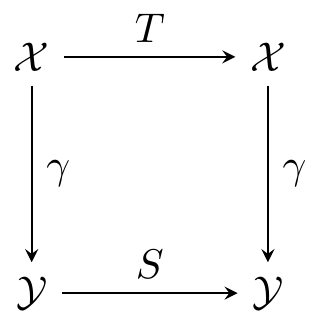

Chapter 10 Discrete Time Stochastic Processes
10.1 Convergence concepts
We start this chapter by refering to a sequence \(X_1,X_2,...\) of real-valued random variables as a proces. Consider the event \((X_n\to X)=\left\{\omega\in\Omega\ \vert\ X_m(\omega)\to X(\omega)\ \text{for}\ n\to \infty\right\}\). We want to study such convergence in detail. However first we check measurability. Consider a family \((A_i)_{i\in I}\subset \Omega\) and observe that \[\begin{align*} \Big\{\omega\in \Omega\ \vert\ \forall i\in I : \omega \in A_i\Big\}=\bigcap_{i\in I} A_i,\tag{2.1}\\ \Big\{\omega\in \Omega\ \vert\ \exists i\in I : \omega \in A_i\Big\}=\bigcup_{i\in I} A_i.\tag{2.2} \end{align*}\] From the standard \(N,\varepsilon\) definition of a convergent sequence \((x_n)_{n\in \mathbb{N}}\) we may formulate this convergens in the stochastic setting: \[\begin{align*} (X_n\to X)&=\Big\{\omega\in \Omega\ \vert\ \forall\varepsilon>0 \exists N\in \mathbb{N} \forall n\ge N : \vert X_n(\omega)-X(\omega)\vert <\varepsilon\Big\}\\ &=\Big(\forall\varepsilon>0 \exists N\in \mathbb{N} \forall n\ge N : \vert X_n-X\vert <\varepsilon\Big)\\ &=\bigcap_{\epsilon\in \mathbb{R}^+}\Big(\exists N\in \mathbb{N} \forall n\ge N : \vert X_n-X\vert<\varepsilon\Big)\\ &=\bigcap_{\epsilon\in \mathbb{R}^+}\bigcup_{N=1}^\infty\Big( \forall n\ge N : \vert X_n-X\vert<\varepsilon\Big)\\ &=\bigcap_{\epsilon\in \mathbb{R}^+}\bigcup_{N=1}^\infty\bigcap_{n=N}^\infty\Big( \vert X_n-X\vert<\varepsilon\Big)\in \mathbb{F}\hspace{15pt}\text{for all}\ \varepsilon>0. \end{align*}\] Hence \((X_n\to X)\) lies in \(\mathbb{F}\) since \((\vert X_n-X\vert <\varepsilon)\) lies in \(\mathbb{F}\) since \(X_n-X\) is measurable.
Lemma 2.1. (Hansen) Let \(X,X_1,X_2,...\) be real-valued random variables on \((\Omega, \mathbb{F},P)\). It holds that \[\begin{align*} (X_n\to X)\in \mathbb{F}. \end{align*}\]
Definition 2.2. (Hansen) Let \(X,X_1,X_2,...\) be real-valued random variables on \((\Omega,\mathbb{F},P)\). We say that \(X_n\) converges to \(X\) almost surely, written \(X_n\stackrel{\text{a.s.}}{\to}X\), if \[\begin{align*} P(X_n\to X)=1.\tag{2.6} \end{align*}\]
Lemma 2.3. (Hansen) Let \(X,X',X_1,X_2,...\) be real-valued random variables on \((\Omega,\mathbb{F},P)\). If \(X_n\stackrel{\text{a.s.}}{\to}X\) and \(X_n\stackrel{\text{a.s.}}{\to}X'\) then \(X=X'\) almost surely.
Lemma 2.7. (Hansen) Let \(X_1,X_2,...\) be real-valued random variables on \((\Omega,\mathbb{F},P)\). Then \[\begin{align*} \Big((X_n)\text{ is Cauchy}\Big)\in \mathbb{F}. \end{align*}\]
Lemma 2.8. (Hansen) Let \(X_1,X_2,...\) be real-valued random variables on \((\Omega,\mathbb{F},P)\). If \(P\Big((X_n)\text{ is Cauchy}\Big)=1\) then there exists and \(\mathbb{F}\)-measurable real-valued random variable \(X\) such that \(X_n\stackrel{\text{a.s.}}{\to}X\).
Theorem 2.10. (Hansen) Let \(X_1,X_2,...\) and \(Y_1,Y_2,...\) be real-valued random variables on \((\Omega,\mathbb{F},P)\). Assume that the \(X\)-process and the \(Y\)-process have the same distribution in the sense that \((X_1,...,X_n)\) has the same distribution ad \((Y_1,...,Y_n)\) for all \(n\in\mathbb{N}\). If \(X_n\stackrel{\text{a.s.}}{\to}X\) for som limit variable \(X\), there is a limit variable \(Y\) such that \(Y_n\stackrel{\text{a.s.}}{\to}Y\).
Definition 2.11. (Hansen) Let \(\mathbf{X},\mathbf{X}_1,\mathbf{X}_2,...\) be \(\mathbb{R}^k\) valued random variables on \((\Omega, \mathbb{F},P)\). We say that \(\mathbf{X}_n\) converges to \(\mathbf{X}\) almost surely, written \(\mathbf{X}_n\stackrel{\text{a.s.}}{\to}\mathbf{X}\), if \[\begin{align*} \vert\mathbf{X}_n-\mathbf{X}\vert \stackrel{\text{a.s.}}{\to} 0.\tag{2.15} \end{align*}\]
Lemma 2.12. (Hansen) Let \(\mathbf{X},\mathbf{X}_1,\mathbf{X}_2,...\) be \(\mathbb{R}^k\) valued random variables on \((\Omega, \mathbb{F},P)\) such that \(\mathbf{X}_n\stackrel{\text{a.s.}}{\to}\mathbf{X}\). Let \(f : \mathbb{R}^k\to\mathbb{R}^m\) be a measurable map. Assume that there is a set \(A\in \mathbb{B}_k\) such that \(f\) is continuous on \(A\) and such that \(P(\mathbf{X}\in A)=1\). Then it holds that \(f(\mathbf{X}_n)\stackrel{\text{a.s.}}{\to} f(\mathbf{X})\).
Definition 2.13. (Hansen) Let \(X,X_1,X_2,...\) be real-valued random variables on \((\Omega,\mathbb{F},P)\). We say that \(X_n\) converges to \(X\) in probability, written \(X_n\stackrel{\text{P}}{\to} X\), if \[\begin{align*} \forall \varepsilon>0 :\hspace{10pt} P\big(\vert X_n-X\vert\ge \varepsilon\big)\to 0\hspace{10pt}\text{for}\ n\to \infty.\tag{2.17} \end{align*}\]
Lemma 2.14. (Hansen) Let \(X,X',X_1,X_2,...\) be real-valued random variables on \((\Omega,\mathbb{F},P)\). If \(X_n\stackrel{\text{P}}{\to} X\) and \(X_n\stackrel{\text{P}}{\to} X'\) then \(X=X'\) almost surely.
Lemma 2.14. (Hansen) Let \(X,X',X_1,X_2,...\) be real-valued random variables on \((\Omega,\mathbb{F},P)\). If \(X_n\stackrel{\text{a.s.}}{\to} X\), then \(X_n\stackrel{\text{P}}{\to} X\).
Definition 2.17. (Hansen) Let \(\mathbf{X},\mathbf{X}_1,\mathbf{X}_2,...\) be \(\mathbb{R}^k\) valued random variables on \((\Omega, \mathbb{F},P)\). We say that \(\mathbf{X}_n\) converges to \(\mathbf{X}\) in probability, written \(\mathbf{X}_n\stackrel{\text{P}}{\to} \mathbb{X}\), if \[\begin{align*} \vert \mathbf{X}_n-\mathbf{X}\vert \stackrel{\text{P}}{\to} 0.\tag{2.23} \end{align*}\]
Lemma 2.18. (Hansen) Let \(X,Y,X_1,Y_1,X_2,Y_2,...\) be real-valued random variables on \((\Omega,\mathbb{F},P)\). It holds that \[\begin{align*} \begin{pmatrix} X_n\\Y_n \end{pmatrix}\stackrel{\text{P}}{\to} \begin{pmatrix} X\\Y \end{pmatrix}\hspace{15pt}\iff \hspace{15pt} X_n\stackrel{\text{P}}{\to} X\text{ and }Y_n\stackrel{\text{P}}{\to} Y.\tag{2.24} \end{align*}\]
Definition 2.19. (Hansen) Let \(X,X_1,X_2,...\) be real-valued random variables in \(\mathcal{L}^p(\Omega,\mathbb{F},P)\) for some \(p\ge 1\). We say that \(X_n\) converges to \(X\) \(\mathcal{L}^p\), written \(X_n\stackrel{\mathcal{L}^p}{\to} X\), if \[\begin{align*} \Vert X_n - X\Vert_p\to 0.\tag{2.27} \end{align*}\] Where the \(p\)’th norm is defined as the mapping \(\Vert \cdot \Vert_p : \Omega\to [0,\infty)\) given by \(X\mapsto \left(\int_\Omega \vert X\vert ^p\ dP\right)^{1/p}\).
One might also define convergence in \(\mathcal{L}^p\) by simply saying if \(X_n\stackrel{\mathcal{L}^p}{\to} X\) then \(E\,\Vert X_n-X\Vert_p\to 0\).
Lemma 2.20. (Hansen) (Extended Cauchy-Schwarz inequality) Let \(X,Y\in\mathcal{L}^p(\Omega,\mathbb{F},P)\) for some \(p\ge 1\). For any \(a\in[0,p]\) it holds that \[\begin{align*} E\, \vert X\vert^a\vert Y\vert^{p-a}\le \Big(E\, \vert X\vert^p\Big)^{\frac{a}{p}}\Big(E\, \vert Y\vert^p\Big)^{\frac{p-a}{p}}.\tag{2.29} \end{align*}\]
Theorem 2.21. (Hansen) Let \(X,X_1,X_2,...\) be real-valued random variables in \(\mathcal{L}^p(\Omega,\mathbb{F},P)\) for some \(p\in\mathbb{N}\). If \(X_n\stackrel{\mathcal{L}^p}{\to} X\), then it holds that \(E\, X_n^p\to E\, X^p\).
Lemma 2.22. (Hansen) Let \(X,X_1,X_2,...\) be real-valued random variables in \(\mathcal{L}^p(\Omega,\mathbb{F},P)\) for some \(p\ge 1\). If \(X_n\stackrel{\mathcal{L}^p}{\to} X\), then \(X_n\stackrel{\text{P}}{\to} X\).
Lemma 2.25. (Hansen) (Borel-Cantelli) Let \((\Omega,\mathbb{F},P)\) be a probability space, and let \(A_1,A_2,...\) be a sequence of \(\mathbb{F}\)-measurable sets. It holds that \[\begin{align*} \sum_{n=1}^\infty P(A_n)<\infty\hspace{10pt}\Rightarrow\hspace{10pt}P(A_n\ \text{i.o.})=0. \end{align*}\]
Let \(A_1,A_2,...\) be a sequence of subsets of \(\Omega\). We define \[\begin{align*} (A_n\ \text{i.o.})=\bigcap_{n=1}^\infty\bigcup_{m=n}^\infty A_m,\hspace{10pt}(A_n\ \text{evt.})=\bigcup_{n=1}^\infty\bigcap_{m=n}^\infty A_m. \end{align*}\] One might also define \(Y=\sum_{n=1}^\infty 1_{A_n}\) and realise that \((A_n\ \text{i.o.})=(Y=\infty)\) and \((A_n\ \text{evt.})=(Y<\infty)\). Also by de Morgan’s law it follows that \((A_n\ \text{evt.})^c=(A_n^c\ \text{i.o.})\).
Theorem 2.26. (Hansen) Let \(X,X_1,X_2,...\) be real-valued random variables on \((\Omega,\mathbb{F},P)\). If \[\begin{align*} \forall \varepsilon>0:\hspace{10pt}\sum_{n=1}^\infty P(\vert X_n-X\vert \ge \varepsilon)<\infty,\tag{2.32} \end{align*}\] then it holds that \(X_n\stackrel{\text{a.s.}}{\to} X\).
Theorem 2.27. (Hansen) Let \(X,X_1,X_2,...\) be real-valued random variables on \((\Omega,\mathbb{F},P)\). If \(X_n\stackrel{\text{P}}{\to} X\), then there is a subsequence \(X_{n_1},X_{n_2},...\) such that \(X_{n_k}\stackrel{\text{a.s.}}{\to} X\) for \(k\to \infty\).
Lemma 2.28. (Hansen) Let \(\mathbf{X},\mathbf{X}_1,\mathbf{X}_2,...\) be \(\mathbb{R}^k\)-valued random variables on \((\Omega,\mathbb{F},P)\) such that \(\mathbf{X}_n\stackrel{\text{P}}{\to} \mathbf{X}\). Let \(f : \mathbb{R}^k\to \mathbb{R}^m\) be a measurable map. Assume that there is a set \(A\in\mathbb{B}_k\) such that \(f\) is continuous on \(A\) and such that \(P(\mathbf{X}\in A)=1\). Then it holds that \(f(\mathbf{X}_n)\stackrel{\text{P}}{\to} f(\mathbf{X})\).
Lemma. (Fatou’s Lemma) Let \((\Omega,\mathbb{F},P)\) be a measure space (here probability space). Let \(f_n : \mathcal{X} \to [0,\infty]\), with \(\mathcal{X}\in\mathbb{F}\), be a sequence of non-negative measurable functions. Assume \(f_n\) converge pointwise to \(f : \mathcal{X}\to [0,\infty)\). Then \[\begin{align*} \int_{\mathcal{X}} \liminf_{n\to\infty} f_n\ dP\le \liminf_{n\to\infty} \int_{\mathcal{X}} f_n\ dP. \end{align*}\]
Lemma. (Holder’s Inequality) Let \((\Omega,\mathbb{F},P)\) be a measure space (here probability space). Let \(f\) and \(g\) be real-valued (or complex-valued) functions defined on \(\Omega\). Assume \(f\) and \(g\) are measurable. For any \(p,q\ge 1\) such that \(\frac{1}{p}+\frac{1}{q}=1\) it holds that \[\begin{align*} \left(\int_\Omega \vert fg\vert^1\ dP\right)^1\le \left(\int_\Omega \vert f\vert^p\ dP\right)^{1/p}\left(\int_\Omega \vert g\vert^q\ dP\right)^{1/q} \end{align*}\]
10.1.1 Sums and average processes
Lemma 4.1. (Hansen) Let \(X_1,...,X_n\) be independent real-valued random variables with \(E\, X_i^4<\infty\) for all \(i\). If \(E\, X_i=0\) for all \(i\) then it holds that \[\begin{align*} E\left(\sum_{i=1}^n X_i\right)^4=\sum_{i=1}^n E\, X_i^4+6\sum_{i=1}^{n-1}\sum_{j=i+1}^n E\, X_i^2\,E\,X_j^2. \end{align*}\]
Theorem 4.2. (Hansen) (SLLN, weak form) Let \(X_1,X_2,...\) be a sequence of independent and identically distributed real-valued random variables. If \(E\, X_1^4<\infty\) it holds that \[\begin{align*} \frac{1}{n}\sum_{i=1}^n X_i \hspace{10pt}\stackrel{\text{a.s.}}{\to} \hspace{10pt}E\, X_1.\tag{4.3} \end{align*}\]
Theorem 4.10. (Hansen) (Etemadi’s maximal inequality) Let \(X_1,...,X_n\) be independent real-valued random variables. Consider the cumulative sums \[\begin{align*} S_k=\sum_{i=1}^kX_i\hspace{10pt}\text{for}\ k=1,..., n. \end{align*}\] For any \(\alpha >0\) it holds that \[\begin{align*} P\left(\max_{j=1,...,n}\ \vert S_j\vert\ge 3\alpha\right)\le 3\ \max_{j=1,...,n}\ P(\vert S_j\vert \ge \alpha).\tag{4.11} \end{align*}\]
Theorem 4.11. (Hansen) (Levy’s maximal inequality) Let \(X_1,...,X_n\) be independent real-valued random variables, each with a symmetric distribution. Consider the cumulative sums \[\begin{align*} S_k=\sum_{i=1}^kX_i\hspace{10pt}\text{for}\ k=1,..., n. \end{align*}\] For any \(\alpha>0\) it holds that \[\begin{align*} P\left(\max_{j=1,...,n}\ S_j\ge \alpha\right)\le 2 P(S_j\ge \alpha).\tag{4.13} \end{align*}\]
Corollary 4.12. (Hansen) Let \(X_1,...,X_n\) be independent real-valued random variables, each with a symmetric distribution. Consider the cumulative sums \[\begin{align*} S_k=\sum_{i=1}^kX_i\hspace{10pt}\text{for}\ k=1,..., n. \end{align*}\] For any \(\alpha>0\) it holds that \[\begin{align*} P\left(\max_{j=1,...,n}\ \vert S_j\vert\ge \alpha\right)\le 2 P(\vert S_j\vert\ge \alpha).\tag{4.14} \end{align*}\]
Theorem 4.13. (Hansen) (Skorokhod) Let \(X_1,X_2,...\) be a sequence of independent real-valued random variables, and consider the cumulative sums \(S_k=\sum_{i=1}^kX_i\). Let \(S\) be a potential limit variable. It holds that \[\begin{align*} S_n \stackrel{\text{P}}{\to} S\hspace{10pt}\Rightarrow\hspace{10pt} S_n\stackrel{\text{a.s.}}{\to} S. \end{align*}\]
Corollary 4.14. (Hansen) (Khintchine-Kolmogorov) Let \(X_1,X_2,...\) be a sequence of independent real-valued random variables. Assume \(E\, X_n^2<\infty\) and that \(E\, X_n=0\) for every \(n\in\mathbb{N}\). Consider the cumulative sums \(S_k=\sum_{i=1}^kX_i\). If \[\begin{align*} \sum_{n=1}^\infty E\, X_n^2<\infty\tag{4.18} \end{align*}\] then there exist a limit variable \(S\) such that \(S_n\to S\) almost surely and in \(\mathcal{L}^2\). The limit variable satisfies that \[\begin{align*} E\, S=0\hspace{10pt}\text{and}\hspace{10pt}V\, S=\sum_{n=1}^\infty V\, X_n. \end{align*}\]
Theorem 4.17. (Hansen) Let \(X_1,X_2,...\) be a sequence of independent real-valued random variables, and consider the cumulative sums \(S_k=\sum_{i=1}^kX_i\). Let \(S\) be a potential limit variable. Assume that there is a constant \(c>0\) such that \(P(\vert X_n\vert \le c)=1\) for all \(n\), and assume that \(E\, X_n=0\) for all \(n\). The the three statements 1. \(S_n\stackrel{\text{P}}{\to} S\), 2. \(S_n\stackrel{\text{a.s.}}{\to} S\) 3. \(S_n\stackrel{\mathcal{L}^2}{\to} S\) are equivalent.
Lemma 4.18. (Hansen) Let \(X_1,X_2,...\) be a sequence of independent real-valued random variables. Assume that there is a constant \(c>0\) such that \(P(\vert X_n\vert \le c)=1\) for all \(n\). If the associated random walk \(S_n=\sum_{i=1}^n X_i\) satisfies that \(S_n\to S\) almost surely for some limit variable then it holds that \[\begin{align} \text{1)}\hspace{10pt}& \sum_{n=1}^NE\, X_n\hspace{5pt}\text{converges in }\mathbb{R}\hspace{5pt}\text{for}\ N\to \infty,\\ \text{2)}\hspace{10pt}&\sum_{n=1}^\infty V(X_n)<\infty. \end{align}\]
Theorem 4.19. (Hansen) (Kolmogorov’s 3-series theorem) Let \(X_1,X_2,...\) be a sequence of independent real-valued random variables. Consider the assoiciated random walk \(S_n=\sum_{i=1}^n X_i\). If there is a cut-off value \(c>0\) such that the capped variables \(\tilde{X}_n=1_{\vert X_n\vert \le c}X_n\) satisfies that \[\begin{align*} \text{1)}\hspace{10pt}& \sum_{n=1}^\infty P(X_n\ne \tilde{X}_n)<\infty,\\ \text{2)}\hspace{10pt}& \sum_{n=1}^N E\, \tilde{X}_n\ \text{converges in }\mathbb{R}\ \text{for}\ N\to \infty,\\ \text{3)}\hspace{10pt}& \sum_{n=1}^\infty V(\tilde{X}_n)<\infty, \end{align*}\] then there is a real-valued limit variable \(S\) such that \(S_n\to S\) almost surely. Conversely, if \((S_n)_{n\in\mathbb{N}}\) is almost surely convergent, then the three series above converge for any cut-off value \(c>0\).
Lemma 4.20. (Hansen) Let \((x_n)_{n\in\mathbb{N}}\) be a real-valued sequence, and let \(c\) be a real number. It holds that \[\begin{align*} x_n\to c\ \text{for}\ n\to \infty \hspace{10pt}\Rightarrow\hspace{10pt} \frac{1}{n}\sum_{i=1}^nx_i\to x\ \text{for}\ n\to\infty. \end{align*}\]
Lemma 4.21. (Hansen) (Kronecker) Let \((x_n)_{n\in\mathbb{N}}\) be real-valued sequence, and let \(c\) be a real number. It holds that \[\begin{align*} \sum_{i=1}^n\frac{x_i}{i}\to c \hspace{10pt}\Rightarrow\hspace{10pt} \frac{1}{n}\sum_{i=1}^nx_i\to 0 \end{align*}\] for \(n\to \infty\).
Lemma 4.23. (Hansen) Let \(X_1,X_2,...\) be a sequence of identically distributed real-valued random variables, and let \(\tilde{X}_n=1_{(\vert X_n\vert \le n}X_n\). If \(E\vert X_1\vert<\infty\) it holds that \[\begin{align*} \sum_{n=1}^\infty\frac{E\ \tilde{X}_n^2}{n^2}<\infty. \end{align*}\]
Theorem 4.24. (Hansen) (SLLN, strong version) Let \(X_1,X_2,...\) be sequence of independent and identically distributed real-valued random variables. If \(E\vert X_1\vert <\infty\) it holds that \[\begin{align*} \frac{1}{n}\sum_{n=1}^\infty X_i\stackrel{\text{a.s.}}{\to} E\ X_1.\tag{4.24} \end{align*}\]
Theorem 4.25. (Hansen) (SLLN, \(\mathcal{L}^p\)-version) Let \(X_1,X_2,...\) be sequence of independent and identically distributed real-valued random variables. If \(E\vert X_1\vert^p <\infty\) for some \(p\ge 1\), then it holds that \[\begin{align*} \frac{1}{n}\sum_{n=1}^\infty \stackrel{\mathcal{L}^p}{\to} E\ X_1.\tag{4.26} \end{align*}\]
Lemma 4.26. (Hansen) Let \(X_1,X_2,...\) be a sequence of pairwise independent, identically distributed real-valued random variables with \(E\vert X_1\vert <\infty\). Let \(n_1<n_2<...\) be a sequence of natural numbers. If there are constants \(C_1,C_2>0\) and \(\alpha>1\) such that \[\begin{align*} C_1\alpha^k\le n_k\le C_2\alpha^k\hspace{15pt}\text{for}\ k\to\infty\tag{4.27} \end{align*}\] then it holds that \[\begin{align*} \frac{1}{n_k}\sum_{i=1}^{n_k}X_i\stackrel{\text{a.s.}}{\to} E\ X_1\hspace{15pt}\text{for}\ k\to \infty. \end{align*}\]
Theorem 4.27. (Hansen) (Etemahdi’s version) Let \(X_1,X_2,...\) be a sequence of pairwise independent, identically distributed real-valued random variables. If \(E\vert X_1\vert<\infty\) it holds that \[\begin{align*} \frac{1}{n}\sum_{i=1}^nX_i\stackrel{\text{a.s.}}{\to} E\ X_1.\tag{4.30} \end{align*}\]
10.1.2 Ergodic Theory
Definition 5.3. (Hansen) Let \((\mathcal{X},\mathbb{E})\) be a measurable space and let \(T : \mathcal{X}\to \mathcal{X}\) be measurable. A probability measure \(\mu\) on \((\mathcal{X},\mathbb{E})\) is invariant under \(T\) if \[\begin{align*} \mu\big(T^{-1}(A)\big)=\mu(A)\hspace{10pt}\text{for all}\ A\in\mathbb{E}\tag{5.5} \end{align*}\] In this case we call the quadruple \((\mathcal{X},\mathbb{E},\mu,T)\) a measure-preserving dynamical system.
We say that a set \(A\in\mathbb{E}\) is an invariant set if \(T^{-1}(A)=A\) i.e. the orbit of all \(x\in A\) stays in \(A\).
Definition 5.5. (Hansen) A measure-preserving dynamical system \((\mathcal{X},\mathbb{E},\mu,T)\) is ergodic if \[\begin{align*} T^{-1}(A)=A,\ A\in\mathbb{E} \hspace{10pt}\Rightarrow\hspace{10pt} \mu(A)\in\{0,1\}.\tag{5.7} \end{align*}\]
Definition 5.6. (Hansen) A measure-preserving dynamical system \((\mathcal{X},\mathbb{E},\mu,T)\) is mixing if \[\begin{align*} \mu(A\cap T^{-n}(B))\to \mu(A)\mu(B)\hspace{10pt}\text{for all}\ A,B\in\mathbb{E}.\tag{5.8} \end{align*}\]
Lemma 5.7. (Hansen) If a measure-preserving dynamical system \((\mathcal{X},\mathbb{E},\mu,T)\) is mixing then it is also ergodic.
Lemma 5.8. (Hansen) Let \((\mathcal{X},\mathbb{E},\mu,T)\) be a measure-preserving dynamical system. Let \(\mathbb{D}\) be an \(\cap\)-stable generator for \(\mathbb{E}\). If \[\begin{align*} \mu(A\cap T^{-n}(B))\to \mu(A)\mu(B)\hspace{10pt}\text{for all}\ A,B\in\mathbb{D}.\tag{5.10} \end{align*}\] then the system is mixing. (and ergodic)
Lemma 5.9. (Hansen) Let \((\mathcal{X},\mathbb{E},\mu)\) be a probability space, and let \(T : \mathcal{X}\to \mathcal{X}\) be a measure-preserving map. Let \((\mathcal{Y},\mathbb{G})\) be another measurable space, and let \(S : \mathcal{Y} \to \mathcal{Y}\) be a measurable map. Suppose there is a measurable map \(\gamma : \mathcal{X}\to \mathcal{Y}\) such that the following diagram commutes:

Then \((\mathcal{Y},\mathbb{G},\gamma(\mu),S)\) is a measure-preserving dynamical system.
Lemma 5.10. (Hansen) Let \((\mathcal{X},\mathbb{E},\mu,T)\) and \((\mathcal{Y},\mathbb{G},\nu,S)\) be two measure-preserving dynamical systems. Suppose there is a measurable map \(\gamma : \mathcal{X}\to\mathcal{Y}\) such that \(\nu =\gamma(\mu)\) and such that the diagram in lemma 5.9 commutes. If \((\mathcal{X},\mathbb{E},\mu,T)\) is ergodic then \((\mathcal{Y},\mathbb{G},\nu,S)\) is also ergodic.
Lemma 5.11. (Hansen) (Maximal Ergodic Lemma) Let \((\mathcal{X},\mathbb{E},\mu,T)\) be a measure-preserving dynamical system, and let \(f : \mathcal{X}\to \mathbb{R}\) be Borel measurable. If \(f\in \mathcal{L}^1(\mu)\) then it holds that \[\begin{align*} \int_{(M_n>0)}f\ d\mu\ge 0\tag{5.14} \end{align*}\] where \(M_n=\max\{0,S_1,S_2,...,S_n\}\) from the sequence \[\begin{align*} \Big(f(x), f\circ T(x),f\circ T^2(x),f\circ T^3(x),...\Big)\hspace{10pt}\text{with}\hspace{10pt}S_n=\sum_{i=0}^{n-1}f\circ T^i. \end{align*}\]
Theorem 5.12. (Hansen) (Birkhoff’s ergodic theorem) Let \((\mathcal{X},\mathbb{E},\mu,T)\) be an ergodic system. For \(f\in \mathcal{L}^1(\mu)\) it holds that \[\begin{align*} \frac{1}{n}\sum_{i=0}^{n-1}f\circ T^i\stackrel{\text{a.s.}}{\to} \int f\ d\mu.\tag{5.16} \end{align*}\]
Theorem 5.13. (Hansen) (Ergodic theorem, \(\mathcal{L}^p\)-version) Let \((\mathcal{X},\mathbb{E},\mu,T)\) be an ergodic system. If \(f\in \mathcal{L}^p(\mu)\) for some \(p\ge 1\) then it holds that \[\begin{align*} \frac{1}{n}\sum_{i=0}^{n-1}f\circ T^i\stackrel{\mathcal{L}^p}{\to}\int f\ d\mu.\tag{5.21} \end{align*}\]
Lemma 5.14. (Hansen) Let \((\mathcal{X},\mathbb{E})\) be a measurable space. The measurable finite dimensional product sets in \(\mathcal{X}^{\mathbb{N}}\) form an \(\cap\)-stable generator for \({\mathbb{E}}^{\otimes\mathbb{N}}\).
An element of the space \(\mathcal{X}^{\mathbb{N}}\) is a countable set of coordinates \(x_n\) for \(n\in\mathcal{N}\) with \(x_n\in\mathcal{X}\). A finite dimensional product set in \(\mathcal{X}^{\mathbb{N}}\) is set on the form \[\begin{align*} A_1\times ... \times A_k\times \mathcal{X}\times \mathcal{X}\times ... \end{align*}\] where \(A_1,...,A_k\subset \mathcal{X}\). We also define the projection sigma-algebra \(\mathbb{E}^{\otimes \mathbb{N}}\) as \(\sigma\left(\big(\hat{X}_n(\mathcal{X}^n)\big)_{n\in\mathbb{N}}\right)\) where \(\hat{X}_n(x_1,...,x_n)=x_n\).
Definition 5.15. (Hansen) Let \(X_1,X_2,...\) be a sequence of \((\mathcal{X},\mathbb{E})\)-valued random variable, defined on a background space \((\Omega,\mathbb{F},P)\), and let \(\mathbb{X}=(X_1,X_2,...)\) be their bundling. The distribution of the process is the image measure \(\mathbb{X}(P)\) on \((\mathcal{X}^{\mathbb{N}},{\mathbb{E}}^{\otimes \mathbb{N}})\).
Lemma 5.16. (Hansen) Let \(\mathbb{X}=(X_1,X_2,...)\) and \(\mathbb{Y}=(Y_1,Y_2,...)\) be two \((\mathcal{X},\mathbb{E})\)-valued stochastic process, defined on a common background space . The two processes \(\mathbb{X}\) and \(\mathbb{Y}\) have the same distribution if and only if the have the same fidis. This can be checked by showing that \[\begin{align*} P(X_1\in A_i,...,X_k\in A_k)=P(Y_1\in A_1,...,Y_k\in A_k)\tag{5.25} \end{align*}\] for any \(k\in\mathbb{N}\) and any choice of \(A_1,...,A_k\in\mathbb{E}\).
Definition 5.18. (Hansen) Let \(X_1,X_2,...\) be a sequence of \((\mathcal{X},\mathbb{E})\)-valued random variable, defined on a background space \((\Omega,\mathbb{F},P)\), and let \(\mathbb{X}=(X_1,X_2,...)\) be their bundling. Then we define: 1. The proces \(\mathbb{X}\) is stationary if the distrbution \(\mathbb{X}(P)\) is an \(S\)-invariant probability on \(\Big(\mathbb{R}^{\mathbb{N}},\mathbb{B}^{\otimes \mathbb{N}}\Big)\), 2. The proces \(\mathbb{X}\) is ergodic if it is stationary and if the dynamical system \(\Big(\mathbb{R}^{\mathbb{N}},\mathbb{B}^{\otimes \mathbb{N}},\mathbb{X}(P),S\Big)\) is ergodic. 3. The proces \(\mathbb{X}\) is mixing if it is stationary and if the dynamical system \(\Big(\mathbb{R}^{\mathbb{N}},\mathbb{B}^{\otimes \mathbb{N}},\mathbb{X}(P),S\Big)\) is mixing. with \(S\) being the shift map defined as \(S(x_1,x_2,...)=(x_2,x_3,...)\).
Theorem 5.20. (Hansen) (Khintchine’s ergodic theorem) Let \(X_1,X_2,...\) be a stationary and ergodic sequence of real-valued random variables. If \(E\vert X_1\vert <\infty\) it holds that \[\begin{align*} \frac{1}{n}\sum_{i=1}^nX_i\stackrel{\text{a.s.}}{\to} E\ X_1.\tag{5.27} \end{align*}\] If \(E\vert X_1\vert ^p<\infty\) for some \(p\ge 1\), the convergence is also in \(\mathcal{L}^p\).
Theorem 5.21. (Hansen) (Ergodic transformation theorem) Let \(X_1,X_2,...\) be a sequence of real-valued random variables. For a measurable function \(\phi : \big(\mathbb{R}^{\mathbb{N}},\mathbb{B}^{\otimes\mathbb{N}}\big)\to (\mathbb{R},\mathbb{B})\) we define new real-valued random variables \[\begin{align*} Y_n=\phi(X_n,X_{n+1},...)=\phi\circ S^{n-1}(\mathbb{X})\hspace{15pt}\text{for}\ n\in\mathbb{N}. \end{align*}\] If \(X_1,X_2,...\) is stationary and ergodic then \(Y_1,Y_2,...\) is also stationary and ergodic.
Definition 5.23. (Hansen) Let \((X_n)_{n\in\mathbb{Z}}\) be a two-sided sequence of real-valued random variables, defined on a background space \((\Omega,\mathbb{F},P)\), and let \(\mathbb{X}\) be their bundling. 1. The proces \(\mathbb{X}\) is stationary if the distrbution \(\mathbb{X}(P)\) is an \(S\)-invariant probability on \(\Big(\mathbb{R}^{\mathbb{Z}},\mathbb{B}^{\otimes \mathbb{Z}}\Big)\), 2. The proces \(\mathbb{X}\) is ergodic if it is stationary and if the dynamical system \(\Big(\mathbb{R}^{\mathbb{Z}},\mathbb{B}^{\otimes \mathbb{Z}},\mathbb{X}(P),S\Big)\) is ergodic. 3. The proces \(\mathbb{X}\) is mixing if it is stationary and if the dynamical system \(\Big(\mathbb{R}^{\mathbb{Z}},\mathbb{B}^{\otimes \mathbb{Z}},\mathbb{X}(P),S\Big)\) is mixing.
Theorem 5.25. (Hansen) (Khintchine’s ergodic theorem, two-sided version) Let \((X_n)_{n\in\mathbb{Z}}\) be a two-sided sequence of real-valued random variables. If the sequence is stationary and ergodic and if \(E\vert X_1\vert <\infty\) then it holds that \[\begin{align*} \frac{1}{n}\sum_{i=1}^nX_i\stackrel{\text{a.s.}}{\to} E\ X_1.\tag{5.30} \end{align*}\] If \(E\vert X_1\vert^p<\infty\) for some \(p\ge 1\), the convergence is also in \(\mathcal{L}^p\).
Theorem 5.26. (Hansen) (Ergodic transformation theorem) Let \((X_n)_{n\in\mathbb{Z}}\) be a two-sided sequence of real-valued random variables. For a measurable function \(\phi : \big(\mathbb{R}^{\mathbb{Z}},\mathbb{B}^{\otimes\mathbb{Z}}\big)\to (\mathbb{R},\mathbb{B})\) we define new real-valued random variables \[\begin{align*} Y_n=\phi\circ S^{n}(\mathbb{X})\hspace{15pt}\text{for}\ n\in\mathbb{Z}. \end{align*}\] If \((X_n)_{n\in\mathbb{Z}}\) is stationary and ergodic then \((Y_n)_{n\in\mathbb{Z}}\) is also stationary and ergodic.
10.1.3 Weak Convergence
Definition 6.1. (Hansen) A sequence of probability measures \(\nu_1,\nu_2,...\) on \((\mathbb{R},\mathbb{B})\) is said to converge weakly to a limit probability measure \(\nu\) if \[\begin{align*} \int f\ d\nu_n\to \int f\ d\nu\hspace{15pt}\text{for every}\ f\in C_b(\mathbb{R})\tag{6.2} \end{align*}\] We write \(\nu_n\stackrel{\text{wk}}{\to} \nu\) to denote weak convergence.
Theorem 6.4. (Hansen) (Scheffe’s) Let \(\nu_1,\nu_2,...\) and \(\nu\) be probability measures on \((\mathbb{R},\mathbb{B})\). Assume that for some choice of basic measure \(\mu\) it holds that \(\nu_n=f_n\cdot \mu\) for every \(n\) and \(\nu = f\cdot \mu\) for suitable density functions \(f_n\) and \(f\). If \[\begin{align*} f_n(x)\to f(x)\hspace{15pt}\mu\text{-almost surely} \end{align*}\] then it holds that \(\nu_n\stackrel{\text{wk}}{\to} \nu\).
Lemma 6.8. (Hansen) Let \(\mu\) and \(\nu\) be two probability measures on \((\mathbb{R},\mathbb{B})\). If \[\begin{align*} \int f\ d\mu=\int f\ d\nu\hspace{15pt}\text{for all}\ f\in C_b(\mathbb{R})\tag{6.7} \end{align*}\] then it holds that \(\mu=\nu\).
Theorem 6.9. (Hansen) Let \(\nu_1,\nu_2,...\) be a sequence of probability measures on \((\mathbb{R},\mathbb{B})\) and let \(\mu\) and \(\nu\) be two extra probability measures. If \[\begin{align*} \nu_n\stackrel{\text{wk}}{\to} \mu\hspace{15pt}\text{and}\hspace{15pt}\nu_n\stackrel{\text{wk}}{\to} \nu \end{align*}\] then \(\mu=\nu\).
Definition 6.10. (Hansen) A sequence of real-valued variables \(X_1,X_2,...\), defined on a common background space \((\Omega,\mathbb{F},P)\) is said to converge in distrbution to a limit variable \(X\) if \[\begin{align*} \int f(X_n)\ dP\to \int f(X)\ dP\hspace{15pt}\text{for every}\ f\in C_b(\mathbb{R}).\tag{6.9} \end{align*}\] We will write \(X_n\stackrel{\mathcal{D}}{\to} X\) to denote convergence in distribution.
Lemma 6.11. (Hansen) Let \(X_1,X_2,...\) and \(X\) be real-valued random variables. It holds that \[\begin{align*} X_n\stackrel{\text{P}}{\to} X\hspace{10pt}\Rightarrow\hspace{10pt} X_n\stackrel{\mathcal{D}}{\to} X. \end{align*}\]
Lemma 6.12. (Hansen) Let \(X_1,X_2,...\) be real-valued random variable and let \(x_0\in\mathbb{R}\). It holds that \[\begin{align*} X_n\stackrel{\mathcal{D}}{\to} x_0\hspace{10pt}\Rightarrow\hspace{10pt} X_n\stackrel{\text{P}}{\to} x_0. \end{align*}\]
Theorem 6.13. (Hansen) Let \(\nu,\nu_1,\nu_2,...\) be probability measures on \((\mathbb{R},\mathbb{B})\). Let \(\mathcal{H}\) be a class of bounded, non-negative and measurable functions with the following approximation property: For \(f\in C_b(\mathbb{R})\) with \(f\ge 0\) there is a sequence \(h_1,h_2,...\) of \(\mathcal{H}\)-functions such that \(h_n\nearrow f\). If \[\begin{align*} \int h\ d\nu_n\to \int h\ d\nu\hspace{15pt}\text{for all}\ h\in\mathcal{H}.\tag{6.11} \end{align*}\] then it holds that \(\nu_n\stackrel{\text{wk}}{\to} \nu\).
Theorem 6.14. (Hansen) Let \(\nu,\nu_1,\nu_2,...\) be probability measures on \((\mathbb{R},\mathbb{B})\). If \[\begin{align*} \int f\ d\nu_n\to \int f\ d\nu\hspace{15pt}\text{for all}\ f\in C_c(\mathbb{R})\tag{6.13} \end{align*}\] then it holds that \(\nu_n\stackrel{\text{wk}}{\to} \nu\).
The class \(C_c(\mathbb{R})\) is denoted as the set of all continuous real-valued functions with compact support i.e. there exist a \(M>0\) such that \(f(x)=0\) for all \(\vert x\vert>M\).
Lemma 6.15. (Hansen) Let \(\nu,\nu_1,\nu_2,...\) be probability measures on \((\mathbb{R},\mathbb{B})\), and let \(F,F_1,F_2,...\) be the corresponding distribution functions. If \(\nu_n\stackrel{\text{wk}}{\to}\nu\) then it holds that \[\begin{align*} F_n(x_0)\to F(x_0), \end{align*}\] whenever \(x_0\) is a point of continuity for \(F\).
Theorem 6.17. (Hansen) (Helly-Bray) Let \(\nu,\nu_1,\nu_2,...\) be probability measures on \((\mathbb{R},\mathbb{B})\), and let \(F,F_1,F_2,...\) be the corresponding distribution functions. It holds that \(\nu_n\stackrel{\text{wk}}{\to}\nu\) if and only if there is a dense subset \(A\subset\mathbb{R}\) such that \[\begin{align*} F_n(x)\to F(x)\hspace{15pt}\text{for every}\ x\in A.\tag{6.16} \end{align*}\]
Theorem 6.18. (Hansen) Let \(\nu,\nu_1,\nu_2,...\) be probability measures on \((\mathbb{R},\mathbb{B})\). Let \(F,F_1,F_2,...\) be the corresponding distribution functions, and let \(q,q_1,q_2,...\) be the corresponding quantile functions. If \(\nu_n\stackrel{\text{wk}}{\to}\nu\) then it holds that \[\begin{align*} q_n(p)\to q(p) \end{align*}\] for any \(p\in(0,1)\) such that the equation \(F(x)=p\) hast at most one solution.
Theorem 6.19. (Hansen) (Skorokhod’s representation theorem) Let \(\nu,\nu_1,\nu_2,...\) be probability measures on \((\mathbb{R},\mathbb{B})\). If \(\nu_n\stackrel{\text{wk}}{\to} \nu\) then it is possible to find random variables \(X,X_1,X_2,...\) on a background space \((\Omega,\mathbb{F},P)\) such that \[\begin{align*} X(P)=\nu,\ X_1(P)=\nu_1,\ X_2(P)=\nu_2, ... \end{align*}\] and such that \(X_n\stackrel{\text{a.s.}}{\to} X\).
Corollary 6.20. (Hansen) Let \(\nu,\nu_1,\nu_2,...\) be probability measures on \((\mathbb{R},\mathbb{B})\) such that \(\nu_n\stackrel{\text{wk}}{\to}\nu\). Let \(h : \mathbb{R}\to\mathbb{R}\) be a bounded and measurable function. If there is a Boral-measurable set \(C\subset \mathbb{R}\) such that \(h\) is continuous in every point of \(C\) and such that \(\nu(C)=1\), then it holds that \[\begin{align*} \int h\ d\nu_n\to \int h\ d\nu.\tag{6.20} \end{align*}\]
Corollary 6.21. (Hansen) (Portmanteau’s lemma) Let \(\nu,\nu_1,\nu_2,...\) be probability measures on \((\mathbb{R},\mathbb{B})\) such that \(\nu_n\stackrel{\text{wk}}{\to}\nu\). For any open set \(G\subset \mathbb{R}\) it holds that \[\begin{align*} \liminf{\nu_n(G)}\ge \nu(G)\tag{6.21} \end{align*}\]
Definition 6.22. (Hansen) The characteristic function for a probability measure \(\nu\) on \((\mathbb{R},\mathbb{B})\) is the function \(\phi : \mathbb{R}\to \mathbb{C}\) given by \[\begin{align*} \phi(\theta)=\int e^{ix\theta}\ d\nu(x).\hspace{15pt}\text{for}\ \theta\in\mathbb{R}.\tag{6.23} \end{align*}\]
Some useful observations include \(\vert e^{ix\theta}\vert = 1\) hence \(\phi(\theta)\le 1\) for all \(\theta\in\mathbb{R}\). We may also split the \(\phi\) into an imaginary part and a real part with Euler’s cartesian form \[\begin{align*} \phi(\theta)=\int \cos (x\theta)\ d\nu(x)+i\int \sin (x\theta)\ d\nu(x)\tag{6.24} \end{align*}\] And lastly we have the implication \[\begin{align*} \nu_n\stackrel{\text{wk}}{\to} \nu \hspace{10pt}\Rightarrow\hspace{10pt} \phi_n(\theta)\to \phi(\theta)\hspace{10pt}\text{for all}\ \theta\in\mathbb{R}. \end{align*}\] Furthermore, if \(Y=\xi+\sigma X\) and \(X\sim \mathcal{N}(0,1)\) we have \[\begin{align*} \phi_Y(\theta)=e^{i\xi\theta}e^{-\sigma^2\theta^2/2}. \end{align*}\]
Theorem 6.28. (Hansen) The characteristic function for any probability measure \(\nu\) on \((\mathbb{R},\mathbb{B})\) is uniformly continuous.
Theorem 6.29. (Hansen) Let \(\nu\) be a probability measure on \((\mathbb{R},\mathbb{B})\). If \[\begin{align*} \int \vert x\vert^k\ d\nu(x)<\infty \end{align*}\] for some \(k\in\mathbb{N}\), then the characteristic function \(\phi\) is \(C^k\) and it holds that \[\begin{align*} \phi^{(k)}(\theta)=i^k\int x^ke^{i\theta x}\ d\nu(x)\hspace{15pt}\text{for}\ \theta\in\mathbb{R}.\tag{6.31} \end{align*}\]
Definition 6.30. (Hansen) The convolution of two probability measures \(\nu\) and \(\xi\) on \((\mathbb{R},\mathbb{B})\) is the image measure \[\begin{align*} \nu * \xi=\kappa (\nu\otimes\xi)\tag{6.33} \end{align*}\] where \(\kappa : \mathbb{R}^2\to\mathbb{R}\) is the addition map \(\kappa(x,y)=x+y\).
Theorem 6.31. (Hansen) Let \(\nu\) and \(\xi\) be two probability measures on \(\mathbb{R}\). If \(\xi=f\cdot m\), then the convolution \(\nu*\xi\) will have a density with respect to \(m\). The density is given as \[\begin{align*} g(x)=\int f(x-y)\ d\nu(y)\hspace{15pt}\text{for}\ x\in\mathbb{R}.\tag{6.35} \end{align*}\]
Lemma 6.31. (Hansen) Let \(\nu_1\) and \(\nu_2\) be two probability measures on \((\mathbb{R},\mathbb{B})\) with characteristic functions \(\phi_1\) and \(\phi_2\). The convolution \(\nu_1*\nu_2\) has characteristic function \(\gamma\) given by \[\begin{align*} \gamma(\theta)=\phi_1(\theta)\phi_2(\theta)\hspace{15pt}\text{for}\ \theta\in\mathbb{R}.\tag{6.37} \end{align*}\]
Theorem 6.34. (Hansen) Let \(\xi,\nu,\nu_1,\nu_2,...\) be probability measures on \((\mathbb{R},\mathbb{B})\). It holds that \[\begin{align*} \nu_n\stackrel{\text{wk}}{\to} \nu\hspace{10pt}\Rightarrow\hspace{10pt} \nu_n*\xi\stackrel{\text{wk}}{\to} \nu *\xi. \end{align*}\]
Definition 6.35. (Hansen) A probability measure \(\nu=f\cdot m\) on \((\mathbb{R},\mathbb{B})\) with density \(f\) with respect to Lebesgue measure is of Polya class if \(f\in C_b(\mathbb{R})\) and if the Fourier transform \(\hat{f}\) is \(m\)-integrable.
Lemma 6.39. (Hansen) Let \(\nu\) and \(\xi\) be two probability measures on \(\mathbb{R}\). If \(\xi\) is of Polya class then the convolution \(\nu *\xi\) is also of Polya class.
Theorem 6.40. (Hansen) (Inversion theorem) Let \(\nu=f\cdot m\) be a probability measure on \((\mathbb{R},\mathbb{B})\) of Polya class. It holds that \[\begin{align*} f(x)=\frac{1}{2\pi}\int_{-\infty}^\infty e^{-i\theta x}\hat{f}(\theta)\ d\theta,\ x\in\mathbb{R}.\tag{6.39} \end{align*}\]
Theorem 6.41. (Hansen) Let \(\nu_1\) and \(\nu_2\) be two probability measures on \((\mathbb{R},\mathbb{B})\) with characteristic functions \(\phi_1\) and \(\phi_2\). If \[\begin{align*} \phi_1(\theta)=\phi_2(\theta),\ \forall \theta \in\mathbb{R} \end{align*}\] then \(\nu_1=\nu_2\).
Lemma 6.42. (Hansen) Let \(f : \mathbb{R}\to\mathbb{R}\) be bounded and uniformly continuous. For every \(\varepsilon>0\) there is a probability measure \(\xi\) of Polya class with the property that \[\begin{align*} \Big\vert f(x)-\int f(x+y)\ d\xi(y)\Big\vert<\varepsilon,\ \forall x\in\mathbb{R}.\tag{6.43} \end{align*}\]
Theorem 6.43. (Hansen) (Continuity theorem) Let \(\nu,\nu_1,\nu_2,...\) be probability measures on \((\mathbb{R},\mathbb{B})\) with characteristic functions \(\phi,\phi_1,\phi_2,...\). If \[\begin{align*} \phi_n(\theta)\to \phi(\theta),\ \theta\in\mathbb{R},\tag{6.45} \end{align*}\] then it holds that \(\nu_n\stackrel{\text{wk}}{\to}\nu\).
Definition 6.44. (Hansen) A sequence of probability measures \(\nu_1,\nu_2,...\) on \(\big(\mathbb{R}^k,\mathbb{B}_k\big)\) is said to converge weakly to a limit probability measure \(\nu\) if \[\begin{align*} \int f(x)\ d\nu_n(x)\to\int f(x)\ d\nu(x), \forall f\in C_b(\mathbb{R}^k).\tag{6.46} \end{align*}\] We will write \(\nu_n\stackrel{\text{wk}}{\to}\nu\) to denote weak convergence.
Theorem 6.45. (Hansen) (Continuity theorem) Let \(\nu,\nu_1,\nu_2,...\) be probability measures on \(\big(\mathbb{R}^k,\mathbb{B}_k\big)\) with characteristic functions \(\phi,\phi_1,\phi_2,...\). If \[\begin{align*} \phi_n(\theta)\to \phi(\theta),\ \theta\in\mathbb{R}^k,\tag{6.47} \end{align*}\] then it holds that \(\nu_n\stackrel{\text{wk}}{\to}\nu\).
Lemma 6.46. (Hansen) Let \(\mathbf{X}\) be an \(\mathbb{R}^k\)-valued random variable with characteristic function \(\phi_\mathbf{X}\), and let \(\mathbf{Y}\) be an \(\mathbb{R}^m\)-valued random variable with characteristic function \(\phi_\mathbf{Y}\). If \(\mathbf{X} \perp \!\!\! \perp \mathbf{Y}\) then the bundle \((\mathbf{X},\mathbf{Y})\) is an \(\mathbb{R}^{k+m}\)-valued random variable with \[\begin{align*} \phi_{(\mathbf{X},\mathbf{Y})}(\theta_1,\theta_2)=\phi_\mathbf{X}(\theta_1)\phi_\mathbf{Y}(\theta_2),\ \theta_1\in\mathbb{R}^k,\theta_2\in\mathbb{R}^m.\tag{6.49} \end{align*}\]
Theorem 6.47. (Hansen) (Continuous mapping theorem) Let \(\mathbf{X}_1,\mathbf{X}_2,...\) and \(\mathbf{X}\) be random variables with values in \(\mathbb{R}^k\), and let \(h : \mathbb{R}^k\to\mathbb{R}^m\) be continuous. If \(\mathbf{X}_n\stackrel{\mathcal{D}}{\to} \mathbf{X}\), then it holds that \(h(\mathbf{X}_n)\stackrel{\mathcal{D}}{\to} h(\mathbf{X})\).
Theorem 6.48. (Hansen) (Cramer-Wold’s device) Let \(\mathbf{X}_1,\mathbf{X}_2,...\) and \(\mathbf{X}\) be random variables with values in \(\mathbb{R}^k\). If \[\begin{align*} \mathbf{v}^\top\mathbf{X}_n\stackrel{\mathcal{D}}{\to} \mathbf{v}^\top\mathbf{X},\tag{6.51} \end{align*}\] for any fixed vector \(\mathbf{v}\in\mathbb{R}^k\), then it holds that \(\mathbf{X}_n\stackrel{\mathcal{D}}{\to} \mathbf{X}\).
Lemma 6.49. (Hansen) Let \(\mathbf{X},\mathbf{X}_1,\mathbf{X}_2,...\) be random variables with values in \(\mathbb{R}^k\), let \(\mathbf{Y}_1,\mathbf{Y}_2,...\) be random variables in \(\mathbb{R}^m\), and let \(\mathbf{y}\) be a vector in \(\mathbb{R}^m\). If it holds that \[\begin{align*} \mathbf{X}_n\stackrel{\mathcal{D}}{\to} \mathbf{X},\hspace{15pt}\mathbf{Y}_n\stackrel{\text{P}}{\to} \mathbf{y} \end{align*}\] then the bundle \((\mathbf{X}_n,\mathbf{Y}_n)\) in \(\mathbb{R}^{k+m}\) will satisfy that \[\begin{align*} (\mathbf{X}_n,\mathbf{Y}_n)\stackrel{\mathcal{D}}{\to} (\mathbf{X},\mathbf{y}). \end{align*}\]
Corollary 6.50. (Hansen) (Slutsky’s lemma) Let \(\mathbf{X},\mathbf{X}_1,\mathbf{X}_2,...\) and \(\mathbf{Y}_1,\mathbf{Y}_2,...\) be random variables with values in \(\mathbb{R}^k\). It holds that \[\begin{align*} \mathbf{X}_n\stackrel{\mathcal{D}}{\to} \mathbf{X},\hspace{10pt}\mathbf{Y}_n\stackrel{\text{P}}{\to} \mathbf{0}\hspace{10pt}\Rightarrow\hspace{10pt} \mathbf{X}_n+\mathbf{Y}_n\stackrel{\mathcal{D}}{\to}\mathbf{X}. \end{align*}\]
Corollary 6.51. (Hansen) Let \(\mathbf{X}_1,\mathbf{X}_2,...\) and \(\mathbf{X}\) be random variables with values in \(\mathbb{R}^k\) and let \(Y_1,Y_2,...\) be real-valued random variables. It holds that \[\begin{align*} \mathbf{X}_n\stackrel{\mathcal{D}}{\to} \mathbf{X},\hspace{10pt}Y_n\stackrel{\text{P}}{\to} 1\hspace{10pt}\Rightarrow\hspace{10pt} Y_n\mathbf{X}_n\stackrel{\mathcal{D}}{\to}\mathbf{X}. \end{align*}\]
Corollary 6.52. (Hansen) Let \(\mathbf{X}_1,\mathbf{X}_2,...\) and \(\mathbf{X}\) be random variables with values in \(\mathbb{R}^k\) and let \(Y_1,Y_2,...\) be real-valued random variables. If \[\begin{align*} \mathbf{X}_n\stackrel{\mathcal{D}}{\to} \mathbf{X},\hspace{10pt}Y_n\stackrel{\text{P}}{\to} 0\hspace{10pt}\Rightarrow\hspace{10pt} Y_n\mathbf{X}_n\stackrel{\text{P}}{\to} \mathbf{0}. \end{align*}\]
Definition 6.53. (Hansen) The \(\mathbb{R}^k\)-valued random variable \(\mathbf{Z}=(Z_1,...,Z_k)\) has a multivariate Gaussian distribution if and only if the real-valued random variable \(\sum_{j=1}^kc_jZ_j\) has a one-dimensional Gaussian distribution for every choice of \(c_1,...,c_k\in\mathbb{R}\).
Theorem 6.54. (Hansen) Let \(\mathbf{Z}=(Z_1,...,Z_k)\) have a multivariate Gaussian distribution with \(E\ \mathbf{Z}=\xi\) and \(V\ \mathbf{Z}=\Sigma\). Then the characteristic function is \[\begin{align*} \phi_\mathbf{Z}(\theta)=e^{i\theta^\top\xi}\exp\left(-\frac{1}{2}\theta^\top\Sigma\theta\right),\ \theta\in\mathbb{R}^k.\tag{6.53} \end{align*}\] Conversly, if \(\mathbf{Z}\) has characteristic function given by (6.53) for some \(\xi\in\mathbb{R}^k\) and some symmetric, positive semi-definite \(k\times k\) matrix \(\Sigma\) then \(\mathbf{Z}\) has a multivariate Gaussian distribution with \(E\ \mathbf{Z}=\xi\) and \(V\ \mathbf{Z}=\Sigma\).
Corollary 6.55. (Hansen) Let \(\mathbf{Z}\) be an \(\mathbb{R}^k\)-valued random variable, let \(\mathbf{a}\in\mathbb{R}^m\) and let \(B\) be an \(m\times k\) matrix. It holds that \[\begin{align*} \mathbf{Z}\sim \mathcal{N}(\xi,\Sigma)\hspace{10pt}\Rightarrow\hspace{10pt} \mathbf{a}+B\mathbf{Z}\sim \mathcal{N}\left(\mathbf{a}+B\xi,B\Sigma B^\top\right). \end{align*}\]
Lemma 6.56. (Hansen) Let \(\mathbf{X}=(X_1,...,X_k)\) and \(\mathbf{Y}=(Y_1,...,Y_m)\) be random variables with values in \(\mathbb{R}^k\) respectively \(\mathbb{R}^m\). If both \(\mathbf{X}\) and \(\mathbf{Y}\) have multivariate Gaussian distributions and if \(\mathbf{X}\) and \(\mathbf{Y}\) are independent, then the \(\mathbb{R}^{k+m}\)-valued bundle \((\mathbf{X},\mathbf{Y})\) has a multivariate Gaussian distribution.
Lemma 6.58. (Hansen) Let \(\mathbf{X}=(X_1,...,X_k)\) and \(\mathbf{Y}=(Y_1,...,Y_m)\) be random variables with values in \(\mathbb{R}^k\) respectively \(\mathbb{R}^m\). If the \(\mathbb{R}^{k+m}\)-valued bundle \((\mathbf{X},\mathbf{Y})\) has a multivariate Gaussian distribution, and if \[\begin{align*} \text{Cov}(X_j,Y_l)=0,\ \forall j\text{ and }l \end{align*}\] then \(\mathbf{X}\perp \!\!\! \perp\mathbf{Y}\).
Definition 6.59. (Hansen) Let \(\mathbf{X}_1,\mathbf{X}_2,...\) be \(\mathbb{R}^k\)-valued random variables. Let \(\xi\in\mathbb{R}^k\) be a vector and let \(\Sigma\) be a symmetric, positive semi-definite \(k\times k\) matrix. We sat that \(\mathbf{X}_n\) has an asymptotic normal distribution with parameters \(\big(\xi,\frac{1}{n}\Sigma\big)\), written \[\begin{align*} \mathbf{X}_n\stackrel{\text{a.s.}}{\sim}\mathcal{N}\left(\xi,\frac{1}{n}\Sigma\right), \end{align*}\] if it holds that \[\begin{align*} \sqrt{n}(\mathbf{X}_n-\xi)\stackrel{\mathcal{D}}{\to} \mathcal{N}(0,\Sigma). \end{align*}\]
Lemma 6.60. (Hansen) Let \(\mathbf{X}_1,\mathbf{X}_2,...\) and \(\mathbf{Y}\) be random variables with values in \(\mathbb{R}^k\). If it holds that \(\mathbf{X}_n\stackrel{\text{a.s.}}{\sim} \mathcal{N}(\xi,\frac{1}{n}\Sigma)\) then it follows that \(\mathbf{X}_n\stackrel{\text{P}}{\to}\xi\).
Lemma 6.61. (Hansen) Let \(\mathbf{X}_1,\mathbf{X}_2,...\) and \(\mathbf{Y}\) be \(\mathbb{R}^k\)-valued random variables, and assume that \(\sqrt{n}\mathbf{X}_n\stackrel{\mathcal{D}}{\to} \mathbf{Y}\). Let \(g : \mathbb{R}^k\to \mathbb{R}^m\) be a measurable map. Assume that \(g(\mathbf{0})=\mathbf{0}\) and that \(g\) is differentiable in \(\mathbf{0}\) with deriviate \(Dg(\mathbf{0})=A\). Then it holds that \[\begin{align*} \sqrt{n}g(\mathbf{X}_n)\stackrel{\mathcal{D}}{\to} A\ \mathbf{Y}. \end{align*}\]
Lemma 6.62. (Hansen) (Delta method) Let \(\mathbf{X}_1,\mathbf{X}_2,...\) be \(\mathbb{R}^k\)-valued random variables, and let \(f : \mathbb{R}^k\to \mathbb{R}^m\) be measurable. If \(f\) is differentiable in \(\xi\), then it holds that \[\begin{align*} \mathbf{X}_n\stackrel{\text{a.s.}}{\sim} \mathcal{N}\left(\xi,\frac{1}{n}\Sigma\right)\hspace{10pt}\Rightarrow\hspace{10pt} f(\mathbf{X}_n)\stackrel{\text{a.s.}}{\sim} \mathcal{N}\left(f(\xi),\frac{1}{n}Df(\xi)\Sigma Df(\xi)^\top\right). \end{align*}\]
10.1.4 Central Limit Theorems
Lemma 7.1. (Hansen) Let \(z_1,...,z_n\) and \(w_1,...,w_n\) be complex numbers. If \(\vert z_i\vert \le 1\) and \(\vert w_i\vert\le 1\) for all \(i=1,...,n\) then it holds that \[\begin{align*} \left\vert\prod_{i=1}^n z_i-\prod_{i=1}^n w_i\right\vert\le \sum_{i=1}^n \vert z_i-w_i\vert.\tag{7.1 } \end{align*}\]
Theorem 7.2. (Hansen) (Basic CLT) Let \(X_1,X_2,...\) be independent and identically distributed real-valued random variables. Assume that \(E\ X_1=0\) and \(E\ X_1^2=1\). Then it holds that \[\begin{align*} \frac{1}{\sqrt{n}}\sum_{i=1}^nX_i\stackrel{\mathcal{D}}{\to} \mathcal{N}(0,1)\tag{7.3} \end{align*}\]
Theorem 7.3. (Hansen) (Laplace’s CLT) Let \(X_1,X_2,...\) be independent and identically distributed real-valued random variables with \(E\ X_1^2<\infty\). It holds that \[\begin{align*} \frac{1}{n}\sum_{i=1}^nX_i\stackrel{\mathcal{D}}{\to} \mathcal{N}\left(E\ X_1,\frac{V\ X_1}{n}\right)\tag{7.4} \end{align*}\]
Theorem 7.7. (Hansen) (Laplace’s CLT, multivariate version) Let \(\mathbf{X}_1,\mathbf{X}_2,...\) be independent and identically distributed random variables with values in \(\mathbb{R}^k\). Assume that \(E\vert \mathbf{X}_1\vert^2<\infty\). It holds that \[\begin{align*} \frac{1}{n}\sum_{i=1}^n\mathbf{X}_i\stackrel{\mathcal{D}}{\to} \mathcal{N}\left(E\ \mathbf{X}_1,\frac{1}{n}V\ \mathbf{X}_1\right)\tag{7.7} \end{align*}\]
Definition 7.10. (Hansen) Let \((X_{nm})\) be a centralized array of real-valued random variables. a. The array satisfies the vanishing variance condition if \[\begin{align*} \max_{m=1,...,n}E\ X_{nm}^2\to 0.\tag{7.8} \end{align*}\] b. The array satisfies Lindeberg’s condition if \[\begin{align*} \forall c>0:\hspace{15pt}\sum_{m=1}^n\int_{(\vert X_{nm}\vert>c)}X_{nm}^2\ dP\to 0.\tag{7.9} \end{align*}\] c. The array satisfies Lyapounov’s condition of order \(\alpha>2\) if \[\begin{align*} \sum_{m=1}^nE\ \vert X_{nm}\vert ^\alpha\to 0.\tag{7.10} \end{align*}\]
Lemma 7.11. (Hansen) Lyapounov’s condition of order \(\alpha>2\) implies Lindeberg’s condition.
Lemma 7.12. (Hansen) Lindeberg’s condition implies the vanishing variance condition.
Theorem 7.14. (Hansen) (Lindeberg’s CLT) Let \((X_{nm})\) be a centralized array of real-valued random variables with \(E\ X_{nm}^2<\infty\). Assume that the array satisfies that \[\begin{align*} E\ X_{nm}=0,\ \forall n,m, \end{align*}\] and that \[\begin{align*} \sum_{m=1}^n E\ X^2_{nm}=1.\tag{7.13} \end{align*}\] Assume that the array has independence within rows i.e. \(X_{i1}\perp \!\!\! \perp ... \perp \!\!\! \perp X_{ii}\) for all \(i=1,...,n\) and satisfies Lindeberg’s condition. Then it holds that \[\begin{align*} \sum_{m=1}^nX_{nm}\stackrel{\mathcal{D}}{\to} \mathcal{N}(0,1). \end{align*}\]
Theorem 7.19. (Hansen) (Lindeberg’s CLT, multivariate version) Let \((\mathbf{X}_{nm})\) be a triangular array of random variables with values in \(\mathbb{R}^k\) with \(E\ \vert \mathbf{X}_{nm}\vert^2<\infty\) for all \(n\), \(m\). Assume that \[\begin{align*} E\ \mathbf{X}_{nm}=\mathbf{0},\ \forall n,m \end{align*}\] and \[\begin{align*} \sum_{m=1}^n V\ \mathbf{X}_{nm}\to \Sigma \end{align*}\] for a fixed \(k\times k\) matrix \(\Sigma\). Assume that the array has independence within rows, and assume that the associated real-valued array \((\vert\mathbf{X}_{nm}\vert )\) satisfies Lindeberg’s condition. Then it holds that \[\begin{align*} \sum_{m=1}^n\mathbf{X}_{nm}\stackrel{\mathcal{D}}{\to} \mathcal{N}(\mathbf{0},\Sigma) \end{align*}\]